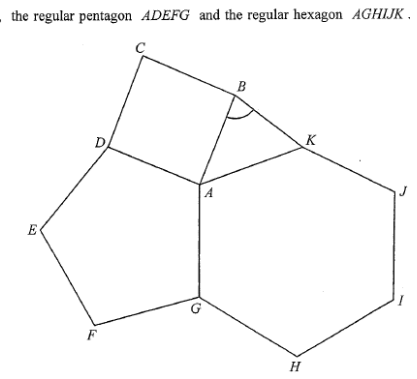

The figure shows the square \(ABCD\), the regular pentagon \(ADEFG\) and the regular hexagon \(AGHIJK\). Find \(\angle ABK\).
2 marks

For a polygon with \(n\) sides, the sum of interior angles is \((n-2)\times 180^\circ\).
Pentagon \(ADEFG\) has \(n=5\):
Since \(ADEFG\) is a regular pentagon, each interior angle is equal:
Hexagon \(AGHIJK\) has \(n=6\):
Since \(AGHIJK\) is a regular hexagon:
At the point \(A\), the rays \(AB\), \(AD\), \(AG\), \(AK\) divide the full angle into four parts:
Substitute the known interior angles (square \(90^\circ\), pentagon \(108^\circ\), hexagon \(120^\circ\)):
In \(\triangle ABK\), we are given \(AB = AK\). Hence \(\triangle ABK\) is an isosceles triangle, so its base angles are equal:
The angle sum of a triangle is \(180^\circ\):
Since \(\angle ABK = \angle AKB\), each base angle is half of \(138^\circ\):